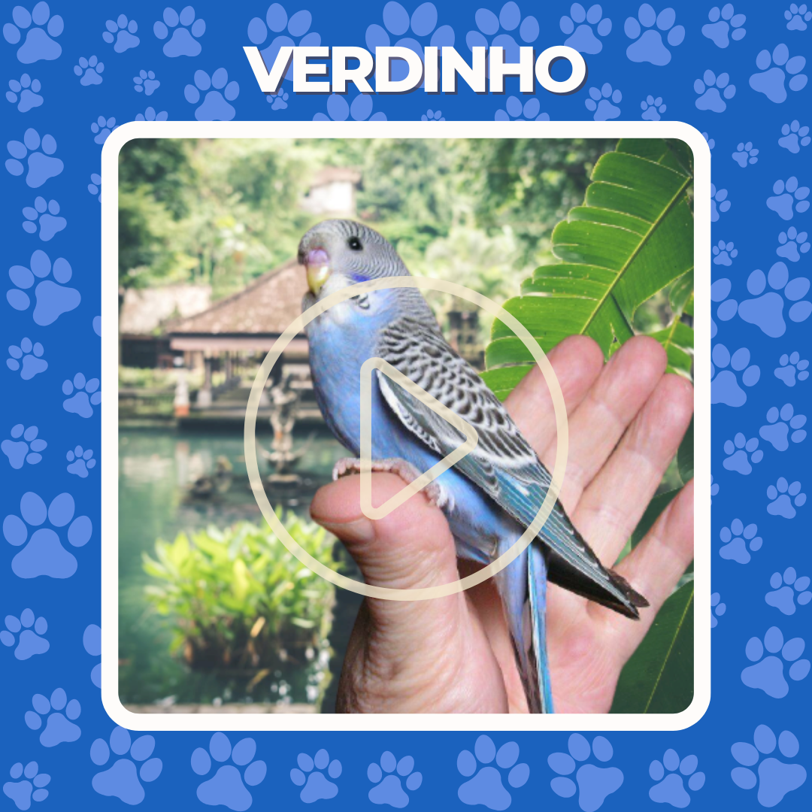
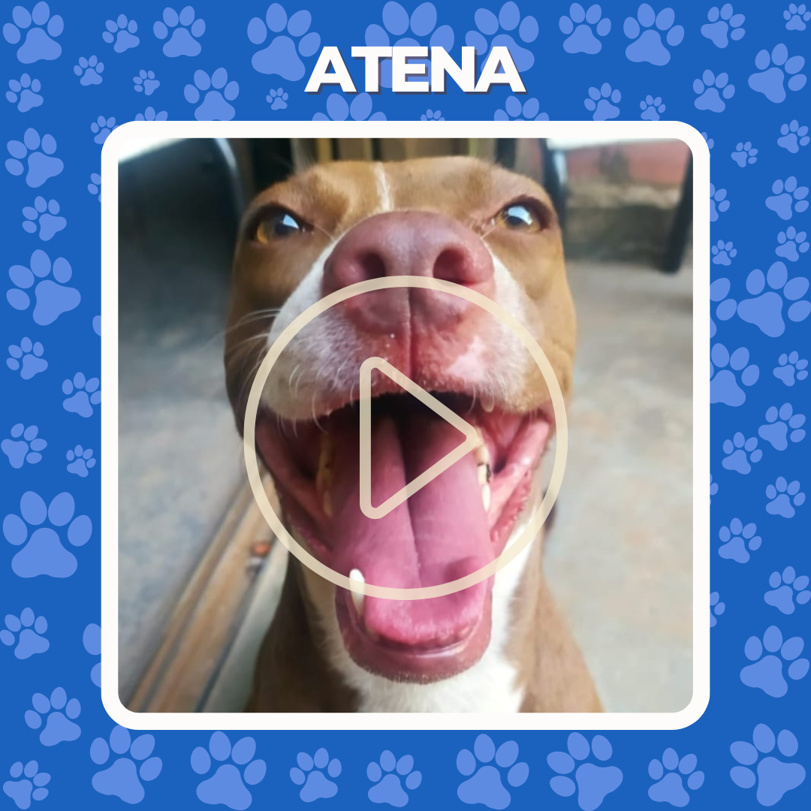
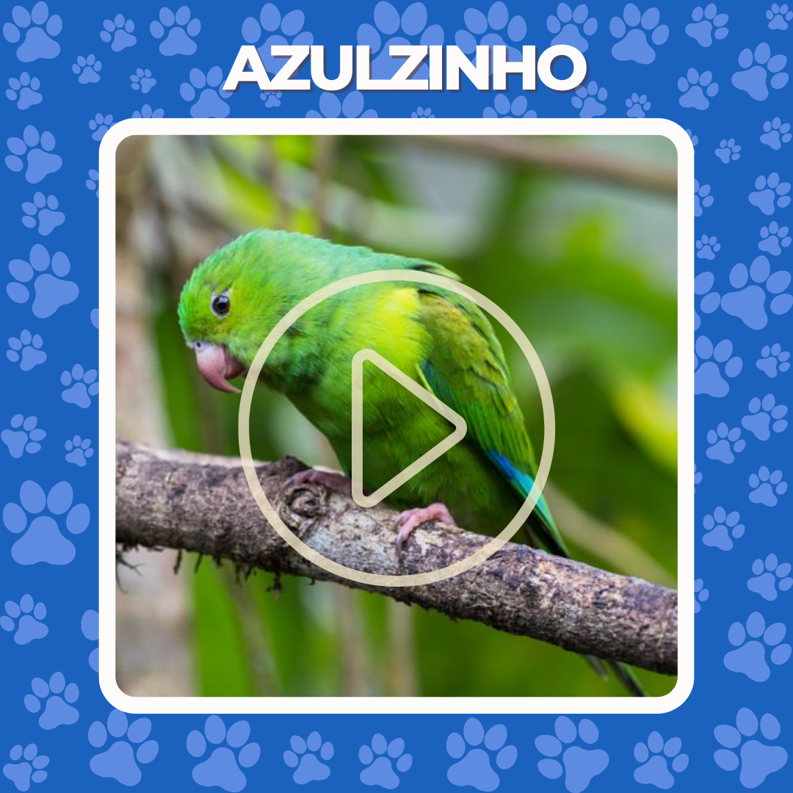

COMO FUNCIONA?
Achou ou perdeu um PET? Anuncie aqui! Simples e rápido. Centenas de apaixonados por Pet conectados para se ajudarem!


QUEM SOMOS?
Somos pais e mães de PET apaixonados por seus amiguinhos. Não suportamos nem se quer 1 minuto sem eles. Por isso criamos essa rede de apoio, para nos apoiarmos durante as intempéries da vida.
“A compaixão pelos animais está intimamente ligada a bondade de caráter, e quem é cruel com os animais não pode ser um bom homem. Arthur Schopenhauer”
Pets Encontrados!




Nos ajude a ampliar nossa rede!
O Chicão fugiu, pode nos ajudar?
Registre seu e-mail para ver os pets perdidos na região: